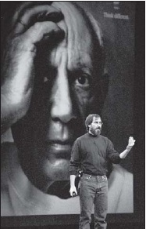

Farklı Düşün
iCEO Olarak Jobs

Picasso’dan faydalanıyor
Delilerin Şerefine
Macintosh’un piyasaya sürüleceği sırada muhteşem “1984” reklamını hazırlamış olan, Chiat/Day’in yaratıcı yönetmeni Lee Clow’un Temmuz 1997 başında Los Angeles’ta araba kullanırken telefonu çaldı. Arayan Jobs’tı. “Selam Lee, ben Steve,” dedi. “Bil bakalım ne oldu? Amelio istifa etti. Buraya gelebilir misin?”
Apple yeni bir reklam ajansı seçmek için değerlendirme yapıyordu ve Jobs gördüklerinden etkilenmemişti. Dolayısıyla Clow’un ve firmasının –artık adı TBWA\Chiat\Day’di– teklif vermesini istiyordu. “Apple’ın hâlâ yaşadığını,” dedi Jobs, “ ve hâlâ özel olduğunu kanıtlamamız gerek.”
Clow başka ajans varsa teklif vermeyeceğini söyledi. “İşimizi biliyorsun,” dedi. Ama Jobs ona yalvardı. Kendilerini pazarlamaya çalışan –BBDO ve Arnold Worldwide’ın da aralarında bulunduğu– diğer şirketlerin hepsini reddedip de “eski bir dostu” geri getirmenin zor olacağını söyledi. Clow Cupertino’ya gitmeyi ve gösterebilecekleri bir şeyler getirmeyi kabul etti. Jobs yıllar sonra o sahneyi anlatırken ağlamaya başladı:
Düşündükçe duygulanıyorum, cidden duygulanıyorum. Lee’nin Apple’ı çok sevdiği öyle barizdi ki. Reklam piyasasında bir numaraydı. Ve on yıldır kendini pazarlamaya çalışmıyordu. Oysa şimdi bunu canla başla yapıyordu, çünkü Apple’ı bizim sevdiğimiz kadar seviyordu. O ve ekibi “Farklı Düşün” diye parlak bir fikir bulmuşlardı. Ve diğer reklam ajanslarının gösterdiği şeylere on basardı. Boğazım düğümlendi ve hâlâ aklıma geldikçe ağlıyorum: Hem Lee’nin Apple’ı o kadar önemsemesine, hem de “Farklı Düşün” fikrinin muhteşemliğine. Arada sırada saflıkla –ruhun ve sevginin saflığıyla– karşılaşırım ve mutlaka ağlarım. Beni mutlaka etkiler. Öyle anlardan biriydi bu. O saflığı asla unutmayacağım. Ofisimde bana o fikri anlattı ve ağladım, hâlâ da aklıma gelince ağlıyorum.
Jobs’la Crow, Apple’ın dünyanın en büyük markalarından biri –duygusal bağlılık konusunda muhtemelen ilk beş markadan biri– olduğunda, ama insanlara neden seçkin olduğunu hatırlatması gerektiğinde hemfikirdiler. Dolayısıyla ürünleri tanıtan bir dizi reklam değil, bir marka imajı kampanyası istiyorlardı. Bu kampanya bilgisayarların neler yapabileceğini değil, yaratıcı insanların bilgisayarlarla neler yapabileceklerini vurgulayacaktı. “Mesele işlemci hızı ya da bellek değildi,” diye anımsıyordu Jobs. “Mesele yaratıcılıktı.” Hedef kitlesi sadece potansiyel müşteriler değil, Apple çalışanlarıydı. “Biz Apple’dakiler kim olduğumuzu unutmuştuk. Kim olduğunu hatırlamanın bir yolu, kahramanlarının kim olduklarını hatırlamaktır. O kampanyanın hedefi buydu.”
Clow ve ekibi “farklı düşünen delileri” yücelten çeşitli yaklaşımlar denediler. Seal’ın “Crazy” şarkısını kullanarak bir video hazırladılar (“Biraz delirmezsek kurtulmamız mümkün değil...”), ama şarkının haklarını alamadılar. Sonra Robert Frost’un “Seçilmeyen Yol” adlı şiirini okumasının kaydını ve Robin Williams’ın Ölü Ozanlar Derneği’nde yaptığı konuşmaları kullanarak çeşitli versiyonlar denediler. Sonunda kendi metinlerini yazmaya karar verdiler ve “Delilerin şerefine...” diye başlayan bir taslağın üstünde çalışmaya başladılar.
Jobs her zamanki kadar talepkârdı. Clow’un ekibi metnin bir versiyonunu getirince Jobs genç metin yazarına açtı ağzını yumdu gözünü. “Bu resmen boktan!” diye bağırdı. “Saçma sapan reklam ajansı metinlerinden biri bu ve hiç beğenmedim.” Jobs’la yeni tanışmış olan genç metin yazarı hiç konuşmadan öylece durdu. Bir daha gelmedi. Ama Jobs’a kafa tutabilenler –ki aralarında Clow ve ekip arkadaşları Ken Segall’la Craig Tanimoto da vardı– onunla birlikte çalışarak, hoşuna giden bir şiirsel ton yakalamayı başardılar. Metnin 60 saniyelik orijinal versiyon şöyleydi:
Delilerin şerefine. Uyumsuzların. Asilerin. Sorun çıkaranların. Kare deliklerdeki yuvarlak çivilerin. Dünyayı farklı görenlerin. Onlar kurallardan hoşlanmazlar. Ve statükoya saygı duymazlar. Onlardan alıntı yapabilirsiniz, onlara katılmayabilirsiniz, onları yüceltebilir ya da kötüleyebilirsiniz. Yapamayacağınız tek şey onları göz ardı etmektir. Çünkü onlar bir şeyleri değiştirirler. İnsan ırkının ilerlemesini sağlarlar. Ve kimileri onları deli olarak görse de, biz dahi olarak görüyoruz. Çünkü dünyayı değiştirebileceklerini düşünecek kadar çılgın olan insanlar... bunu yapan insanlardır.
Jobs bazı cümleleri, örneğin “insan ırkının ilerlemesini sağlarlar” cümlesini bizzat yazmıştı. Ağustos başında Boston Macworld etkinliği düzenlendiğinde, artık ellerinde bir ham versiyon vardı ve Jobs bunu ekibine gösterdi. Reklamın hazır olmadığında hemfikir oldular, ama Jobs oradaki kavramları ve “farklı düşün” sözünü açılış konuşmasında kullandı. “Orada dahice bir fikrin tohumu var,” dedi. “Apple farklı düşünebilen, bilgisayarların dünyayı değiştirmelerine yardımcı olmasını isteyen insanlara hitap ediyor.”
Bir meseleyi tartıştılar: “Farklı düşün” mü yoksa “farklı şekilde düşün” mü demeyi. Ama Jobs “farklı düşün”de ısrar etti. Hem bu söz “büyük düşün” gibi sözleri çağrıştırıyordu. Jobs’ın sonradan söylediği gibi: “Öyle söylemenin doğru olup olmadığını tartıştık. ‘Farklı şekilde düşün’ benim için aynı anlamı taşımazdı.”
Clow’la Jobs Ölü Ozanlar Derneği’ni çağrıştırmak için, metni Robin Williams’ın okumasını istediler. Temsilcisi Williams’ın reklam işlerini kabul etmediğini söyleyince Jobs onu doğrudan aramayı denedi. Williams’ın karısına ulaştı, ama kadın onun aktörle doğrudan konuşmasına izin vermedi, çünkü Jobs’ın ne kadar ikna edici olabildiğini biliyordu. Maya Angelou’yla Tom Hanks’i de düşündüler. O sonbaharda Bill Clinton’ın düzenlediği bir hayır yemeğinde Jobs başkanı kenara çekti ve Tom Hanks’i arayıp ikna etmesini istedi, ama başkan bunu yapmayı reddetti. Sadık bir Apple hayranı olan Richard Dreyfuss’u kullandılar sonunda.
Televizyon reklamlarının yanı sıra, gelmiş geçmiş en unutulmaz basın kampanyalardan birine de imza attılar. Her reklamda, ikon olmuş bir tarihsel figürün siyah beyaz portresini, sadece köşedeki Apple logosuyla ve “Farklı Düşün” sözüyle birlikte kullandılar. Bu yüzlerin kimlere ait olduklarının belirtilmemesi, reklamı iyice etkileyici kılıyordu. Bazılarını –Einstein, Gandhi, Lennon, Dylan, Picasso, Edison, Chaplin, King– tanımak kolaydı. Ama bazıları insanların duraksamasına, şaşırmasına, belki bir arkadaşına sormasına yol açıyordu: Martha Graham, Ansel Adams, Richard Feynman, Maria Callas, Frank Lloyd Wright, James Watson, Amelia Earhart.
Bu insanların çoğu Jobs’ın kişisel kahramanlarıydılar. Çoğu risk almış, başarısızlığı kabullenmemiş ve farklı şeyler yapmak uğruna kariyerlerini riske atmış insanlardılar. Fotoğrafçılığa meraklı olan Jobs, o ikon portrelerinin kusursuz olması için bizzat uğraştı. “Gandhi’nin uygun fotoğrafı bu değil,” diye bağırdı bir keresinde Clow’a. Clow, Margaret Bourke-White’ın çektiği meşhur fotoğrafın, Gandhi’yi bir çıkrığın yanında gösteren siyah beyaz fotoğrafın Time-Life Pictures’a ait olduğunu ve ticari amaçlı kullanılamayacağını açıkladı. Bunun üzerine Jobs, Time’ın baş editörü Norman Pealstine’i aradı ve bir istisna yapmaya ikna etti. Eunice Shriver’ı aradı ve ailesini kardeşi Bobby Kennedy’nin Appalachia’yı gezerken çekilmiş bir fotoğrafının (Jobs bu fotoğrafa bayılıyordu) kullanım hakkını vermeye ikna etmesini istedi; Muppetların yaratıcısı Jim Henson’ın uygun fotoğrafı için de çocuklarıyla konuştu.
Yoko Ono’yu da müteveffa kocası John Lennon’ın bir fotoğrafı için aradı. Ono ona bir fotoğraf gönderdi, ama Jobs’ın en beğendiği fotoğraf değildi bu. “New York’taki bayıldığım, küçük bir Japon restoranına giderken Yoko’yu oraya çağırdım,” diye anımsıyordu Jobs. Restorana girmesinden sonra Ono onun masasına geldi. “Bu daha iyi,” dedi, ona bir zarf vererek. “Seninle görüşeceğimi düşündüğüm için yanımda taşıyordum.” John’la birlikte yatakta çektirdiği klasik, çiçekli fotoğraftı bu – ve Apple’ın kullandığı fotoğraf oldu. “John’ın niye ona aşık olduğunu anlayabiliyorum,” diye anımsıyordu Jobs.
Richard Dreyfuss metni güzel okudu. Ama Lee Clow’un başka bir fikri vardı. Dış ses neden Jobs’ınki olmasındı? “Sen bu işe cidden inanıyorsun,” dedi Clow ona. “Sen yapmalısın.” Bunun üzerine Jobs bir stüdyoda oturup birkaç deneme yaptı ve kısa süre sonra, herkesin beğendiği bir ses kaydı oluşturdu. Bunu kullanırlarsa sesin kime ait olduğunu insanlara söylemeyeceklerdi, tıpkı ikon fotoğraflarının altına ikonların isimlerini yazmayacakları gibi. İnsanlar konuşanın Jobs olduğunu eninde sonunda anlayacaklardı. “Senin sesin gerçekten etkili olacak,” diye iddia ediyordu Clow. “Markayı geri kazanmanın bir yolu olacak.”
Jobs kendi sesini mi, yoksa Dreyfuss’unkini mi kullanması gerektiğine karar veremiyordu. Sonunda reklamın gönderilmesi için son gece geldi çattı; reklam Oyuncak Hikayesi’nin televizyon prömiyeriyle aynı günde yayınlanacaktı tuhaf bir şekilde. Jobs karar vermeye zorlanmaktan hoşlanmadı her zamanki gibi. Sonunda Clow’a iki versiyonu da göndermesini söyledi; böylece karar vermek için sabaha kadar zamanı olacaktı. Sabah olunca arayıp Dreyfuss versiyonunu kullanmalarını söyledi. “Benim sesimi kullanırsak, insanlar bunu öğrenince bende odaklanırlar,” dedi Clow’a. “Oysa reklam benimle ilgili değil. Apple’la ilgili.”
Jobs elma komününden ayrıldığından beri kendini –ve dolayısıyla Apple’ı da– karşıkültür çocuğu olarak tanımlıyordu. “Farklı Düşün” ve “1984” gibi reklamlarda Apple markasını kendi asiliğini sergileyecek şekilde tanıttı (milyarder olduktan sonra bile) ve bebek patlaması kuşağıyla çocuklarını asiliğe teşvik etti. “Onu gençliğinden beri tanırım ve markasının insanlar üzerinde hangi etkiyi uyandırmasını istediği konusunda gayet netti hep,” diyor Clow.
Başka pek az şirket ya da şirket lideri kendi markasını Gandhi, Einstein, King, Picasso ve Dalay Lama gibi insanlarla özdeşleştirmek gibi dahice bir küstahlığı kotarabilirdi –belki de hiçbiri başaramazdı bunu–. Jobs insanları kendilerini tanımlamaya –şirket karşıtı, yaratıcı, yenilikçi asiler olarak tanımlamaya–, sadece kullandıkları bilgisayar yoluyla teşvik etmeyi başardı. “Steve teknoloji endüstrisindeki tek yaşam tarzı markasını yarattı,” diyor Larry Ellison. “İnsanların sahip olmaktan gurur duyduğu arabalar vardır –Porsche, Ferrari, Prius–, çünkü kullandığım araba hakkımda bir şeyler söyler. İnsanlar Apple ürünleri konusunda da aynı şeyi hissediyorlar.”
Jobs “Farklı Düşün” kampanyasından itibaren Apple’da geçirdiği tüm yıllarda, her Çarşamba ikindisinde üst düzey reklamcı, pazarlamacı ve iletişimcileriyle üç saatlik toplantı düzenleyip, markanın mesaj stratejilerini tartıştı. “Bu dünyada pazarlama meselesine Steve gibi yaklaşan bir CEO yok,” diyor Clow. “Her Çarşamba bütün televizyon, basın ve pano reklamlarını bizzat onaylıyor.” Toplantıların sonunda genellikle Clow’la ajanstan iki arkadaşını –Duncan Milner’la James Vincent’ı– Apple’ın oldukça sıkı korunan tasarım stüdyosuna götürüp, üstünde çalışılan ürünleri gösteriyordu. “Hazırlanan şeyleri bize gösterirken çok tutkulu ve duygusal bir hale bürünüyor,” diyor Vincent. Jobs ürünlerin yaratılma süreçlerini pazarlama gurularıyla paylaşmakla, bu kişilerin ürettiği bütün reklamlarda kendi ruh halinin yer almasını garantiliyordu.
iCEO
Jobs “Farklı Düşün” reklamı üstünde çalışmanın sonlarındayken, bizzat farklı düşündü. Şirketinin yönetimini en azından geçici olarak resmen devralmaya karar verdi. Amelio’nun on hafta önce kovulmasından beri gayriresmî liderdi, ama kâğıt üstünde sadece “danışman”dı. Fred Anderson geçici CEO’ydu. 16 Eylül 1997’de Jobs bu ünvanı devralacağını açıkladı; ünvanın kısaltması iCEO[30] oldu kaçınılmaz bir şekilde. Şirketle arasındaki resmi bağ güçlü değildi: Maaş almayacaktı ve sözleşme imzalamadı. Ama eylemleri gayet güçlüydü. Dizginler ondaydı ve konsensüse göre hükmetmedi.
O hafta üst düzey yöneticilerini ve personelini Apple oditoryumunda toplayıp şevklendirici bir konuşma yaptı, sonra da yeni rolünü ve şirketin yeni reklamlarını kutlamak için biralı ve vegan yiyecekli bir piknik düzenledi. Şort giymişti, kampüste yalınayak dolanıyordu ve pis sakallıydı. “Geri döneli on hafta kadar oldu ve gerçekten çok çalışıyorum,” dedi; yorgun ama son derece kararlı görünüyordu. “Amacımız gösteriş değil. İyi ürünlerin temel ilkelerine, iyi pazarlamaya, iyi dağıtıma geri dönmeye çalışıyoruz. Apple temel ilkelerden epey uzaklaştı.”
Jobs’la yönetim kurulu kalıcı CEO aramayı birkaç hafta daha sürdürdüler. Ortaya çeşitli isimler atıldı –Kodak’tan George M. C. Fisher, I.B.M.’den Sam Palmisano, Sun Microsystems’tan Ed Zander–, ama adayların çoğu Jobs’ın faal bir yönetim kurulu üyesi olarak kalması durumunda CEO olmak istemiyorlardı anlaşılır bir şekilde. San Francisco Chronicle, Zander’ın o işi istemediğini çünkü “Steve’in sürekli omzunun üstünden bakmasını ve bütün kararlarına karşı çıkmasını istemediğini” söylediğini yazdı. Bir ara Jobs’la Ellison, işe talip olan bir bilgisayar danışmanına şaka yaptılar; ona kendisinin seçildiğini söyleyen bir e-posta gönderdiler ve onunla sadece dalga geçtikleri gazetelerde yazılınca bunu eğlenceli bulanların yanı sıra onları ayıplayanlar da oldu. “Apple’a geri döndüm ve neredeyse dört ay boyunca, bir işçi bulma ajansının yardımıyla CEO aradım,” diye anımsıyordu Jobs. “Ama önerdikleri insanlar uygun değildi. Bu yüzden sonunda CEO olarak kaldım. Apple kaliteli insanlara cazip gelecek kadar iyi durumda değildi.”
Jobs’ın karşılaştığı sorun, iki şirketi birden yönetmenin çok zor olmasıydı. Geçmişe bakınca, sağlık problemlerinin o günlerde başladığını düşündü.
Zordu, cidden zordu, hayatımın en kötü dönemiydi. Genç bir ailem vardı. Pixar vardı. Sabah 7’de işe gidip gece 9’da dönüyordum ve çocuklar yatmış oluyordu. Ve yorgunluktan konuşamıyordum resmen. Laurene’le konuşamıyordum. Tek yapabildiğim TV seyretmek, ot gibi yaşamaktı. Az daha ölecektim. Pixar’la Apple’a üstü açılır bir siyah Porsche’yle gidip geldiğimden böbreklerimde taşlar oluşmaya başladı. Hastaneye koşuyordum, kalçadan Demarol iğnesi yapıyorlardı ve bir süre sonra taşı düşürüyordum.
Bu yıpratıcı hayata karşın Jobs, kendini Apple’a verdikçe ona daha çok bağlandığını fark etti. 1997’de bir ticari bilgisayar fuarında Michael Dell, Steve Jobs olsa ve Apple’ın başına geçse ne yapacağı sorulduğunda “Şirketi feshederim ve hissedarlara paralarını geri veririm,” diye yanıtladı. Jobs Dell’e bir e-posta gönderdi. “CEO’ların klas insanlar olmaları gerekir,” dedi. “Senin öyle düşünmediğini görebiliyorum.” Jobs ekibini gaza getirmek için rekabeti körüklemeyi severdi –IBM ve Microsoft konusunda bunu yapmıştı– ve Dell konusunda da aynı şeyi yaptı. Ürünlerin sipariş üzerine imal edilip dağıtılacağı bir sistem kurmak için müdürleriyle toplantı yaptığında, arka planda Michael Dell’in büyütülmüş ve yüzüne hedef işareti çizilmiş bir fotoğrafını kullandı. “İşini bitirmeye geliyoruz dostum,” deyince adamları tezahürat yaptılar.
Onu motive eden tutkularından biri kalıcı bir şirket kurmaktı. 12 yaşındayken, yazın Hewlett Packard’da çalışırken, düzgün işletilen bir şirketin tek bir yaratıcı bireyden çok daha yaratıcı olabileceğini öğrenmişti. “Bazen en yaratıcı fikirlerin şirketten, şirket organizasyonundan kaynaklandığını keşfettim,” diye anımsıyordu. “Bir şirket kurmak muhteşem bir şey. Apple’a geri dönme fırsatı bulunca, o şirket olmadan işe yaramayacağımı fark ettim ve bu yüzden kalıp onu baştan kurmaya karar verdim.”
Klonları Öldürmek
Apple’la ilgili en büyük tartışmalardan biri, Microsoft’un Windows’un lisansını verdiği gibi Apple’ın da işletim sisteminin lisansını diğer bilgisayar üreticilerine daha agresifçe vermesinin daha iyi olup olmayacağıydı. Wozniak başından beri bu yaklaşımı savunuyordu. “Elimizde dünyanın en güzel işletim sistemi vardı,” dedi, “ama onu elde etmek için donanımımızı iki misli fiyattan satın almanız gerekiyordu. Bu bir hataydı. İşletim sistemini uygun bir fiyattan satmamız daha iyi olurdu.” 1984’te Apple’a gelen Xerox PARC yıldızı Alan Fay de Mac OS yazılımının lisansının satılması için canla başla uğraştı. “Yazılımcılar her zaman çoklu platform taraftarıdır, çünkü yazılımınızın her şeyde çalışmasını istersiniz,” diye anımsıyordu. “Büyük bir savaş verdim, Apple’da kaybettiğim en büyük savaştı herhalde.”
Microsoft’un işletim sisteminin lisansını satarak servet edinen Bill Gates 1985’te, tam Jobs kovulurken Apple’a aynı şeyi yapmasını tavsiye etmişti. Gates’in inancına göre Apple Microsoft’un işletim sisteminin müşterilerinin bir kısmını alsa bile, Microsoft Word ve Excel gibi uygulama yazılımlarının Macintosh ve klonları için versiyonlarını üreterek para kazanabilirdi. “Yazılımlarının lisansını satmaları için elimden geleni yapıyordum,” diye anımsıyordu. Sculley’ye resmi bir memo göndererek, bunu yapmaları gerektiğini savundu. “Endüstri öyle bir noktaya geldi ki Apple artık diğer bilgisayar üreticilerinin desteğini almadan ve bundan kaynaklanan saygınlığa sahip olmadan, yenilikçi teknolojileriyle bir standart oluşturamaz,” diyordu memoda. “Apple ‘Mac Uyumlu Yazılımların’ geliştirilmesi için Macintosh teknolojisinin lisansını 3-5 önde gelen üreticiye vermeli.” Gates yanıt almayınca ikinci bir memo yazıp, bazı şirketlerin Mac’i iyi bir şekilde klonlayabileceğini söyledi ve “Lisans konusunda elimden geldiğince yardım etmek istiyorum. Lütfen beni ara,” diye ekledi.
Apple Macintosh işletim sisteminin lisansını vermemekte 1994’e kadar direndi ve sonra CEO Michael Spindler iki küçük şirketin –Power Computing’le Radius’un– Macintosh klonları üretmelerine izin verdi. 1996’da şirketin başına gelen Gil Amelio’ysa listeye Motorola’yı ekledi. Bunun çok iyi bir iş stratejisi olmadığı ortaya çıktı: Apple satılan her bilgisayar için 80 dolar lisans bedeli alıyordu, ama kloncular pazarı genişletmek yerine Apple’ın lüks ve pahalı bilgisayarlarının satışını azaltıyorlardı; oysa Apple bu bilgisayarların her birinin satışından 500 dolara kadar kâr elde etmekteydi.
Ama Jobs’ın klon programına itiraz etmesinin tek sebebi ekonomik değildi. Programa fikren de karşıydı. Ana ilkelerinden biri donanımla yazılımın sıkıca entegre olması gerektiğiydi. Bir şeyleri her yönüyle kontrol etmeyi seviyordu ve bilgisayarlarda bunu yapmanın tek yolu cihazın her şeyini üretmek ve kullanıcı deneyiminin sorumluluğunu uçtan uca üstlenmekti.
Dolayısıyla Apple’a geri dönünce Macintosh klonlarını ortadan kaldırmaya öncelik verdi. Temmuz 1997’de, Amelio’nun kovulmasına katkıda bulunmasından aylar sonra, Mac işletim sisteminin yeni bir versiyonu piyasaya sürülünce klon üreticilerinin bu versiyona geçmelerine izin vermedi. O Ağustos’ta, Jobs’ın Boston Macworld’de konuşma yapacağı sırada, Power Computing’in başkanı Stephen “King” Kahng kloncuları destekleyen protesto gösterileri organize etti ve Jobs’ın lisans vermemeyi sürdürmesi durumunda Macintosh OS’nin öleceği uyarısında bulundu. “Platform kapanırsa her şey biter,” dedi Kahng. “Mutlak bir yıkım olur bu. Platformun kapanması o işletim sisteminin ölmesi demektir.”
Jobs hemfikir değildi. Woolard’ı aradı ve Apple’ın verdiği lisansları iptal ettireceğini söyledi. Yönetim kurulu bunu kabul etti ve Jobs Eylül’de Power Computing’le anlaşmaya vararak, bu şirketin lisans hakkından vazgeçmesi ve müşteri veri tabanını Apple’la paylaşması karşılığından 100 milyon dolar ödemeyi kabul etti. Diğer kloncuların lisanlarını da kısa sürede iptal ettirdi. “Berbat donanımlar üreten şirketlerin işletim sistemimizi kullanmalarına ve satışlarımızı baltalamalarına izin vermek dünyanın en büyük salaklığıydı,” dedi sonradan.
Ürün Grubu Değerlendirmesi
Jobs’ın en güçlü yönlerinden biri odaklanmayı bilmesiydi. “Ne yapmayacağına karar vermek, ne yapacağına karar vermek kadar önemlidir,” dedi. “Bu şirketler için de geçerlidir, ürünler için de.”
Jobs Apple’a geri döner dönmez odaklanma ilkelerini uygulamaya girişti. Bir gün koridorlarda yürürken, eskiden Amelio’nun asistanı olan genç bir Wharton School mezunuyla karşılaştı; bu kişi Jobs’a elindeki işi bitirmek üzere olduğunu söyledi. “Eh, bu iyi, çünkü bazı angaryaları halledecek birine ihtiyacım var,” dedi Jobs ona. Eski asistanın yeni görevi, Jobs Apple’da düzinelerce ürün ekibiyle görüşürken, ne yaptıklarını açıklamalarını isterken ve onları ürünlerinin ya da projelerinin neden sürdürülmesi gerektiğini açıklamaya zorlarken not tutmaktı.
Eskiden Apple’da çalışmış olan, ama o sıralar grafik yazılım şirketi Macromedia’da çalışan arkadaşı Paul Schiller’ı da işe aldı. “Steve ekipleri yirmi kişilik yönetim kurulu toplantı odasına çağırıyordu; otuz kişi geliyordu ve ona görmek istemediği PowerPoint sunumları izlettirmeye çalışıyorlardı,” diye anımsıyor Schiller. Dolayısıyla Jobs’ın ürün değerlendirme sürecinde yaptığı ilk işlerden biri PowerPointleri yasaklamak oldu. “İnsanların düşünmek yerine slayt sunumları yapmalarından nefret ediyorum,” diye anımsıyordu Jobs sonradan. “Sorun çıktı mı sunum hazırlıyorlardı. Ben onların meseleye derinlemesine inmelerini, birkaç slayt göstermek yerine konuyu masada uzun uzun irdelemelerini istiyordum. Neyden bahsettiğini bilen insanların PowerPoint’e ihtiyacı yoktur.”
Ürün değerlendirmesi Apple’ın odaklanmaktan ne kadar uzaklaştığını gösterdi. Şirket bürokratik sebepler ve perakendecilerin kaprisleri yüzünden her ürünün çeşitli versiyonlarını üretiyordu. “Delilikti,” diye anımsıyordu Schiller. “Yanılgı içindeki ekiplerin ürettiği, çoğu berbat olan tonlarca ürün vardı.” Apple’ın bir düzine Macintosh versiyonunun her birine 1400’ten 9600’e dek uzanan, kafa karıştırıcı sayılar verilmişti. “İnsanların bana bunu açıklamalarını istedim üç hafta boyunca,” dedi Jobs. “Bir türlü anlayamıyordum.” Sonunda “Arkadaşlarıma hangisini almalarını söyleyeyim?” gibi basit sorular sormaya başladı.
Basit yanıtlar alamayınca modelleri ve ürünleri iptal etmeye başladı. Kısa süre sonra %70’ini iptal etmişti. “Siz akıllı insanlarsınız,” dedi bir gruba. “Zamanınızı böyle berbat ürünlerle harcamamalısınız.” İptal ettirdiği ürünlerin çok sayıda kişinin işten çıkarılmasına yol açması birçok mühendisi hiddetlendirdi. Ama Jobs iyi mühendislerin (projeleri iptal edilenler de dahil olmak üzere) verdiği kararları takdir ettiklerini söyledi sonradan. “Mühendislik ekibi inanılmaz heyecanlı,” dedi Eylül 1997’deki bir personel toplantısında. “Toplantıdan çıktığımda, ürünleri yeni iptal edilmiş insanlar sevinçten havalara uçuyorlardı, çünkü nihayet nereye gittiğimizi anlıyorlardı.”
Birkaç hafta sonra Jobs’ın sabrı tükendi. “Yeter!” diye bağırdı, büyük bir ürün stratejisi toplantısında. “Delilik bu.” Bir keçeli kalem kaptı, bir beyaztahtaya gitti, yatay ve dikey birer çizgi çekerek bir çizelge hazırladı. “İhtiyacımız olan şey şu,” diye devam etti. Üstteki iki sütunun başlarına “Tüketici” ve “Profesyonel” yazdı. Alttaki iki sıranın başlarınaysa “Masaüstü” ve “Taşınabilir” yazdı. İşlerinin her biri bir kareye denk gelecek dört muhteşem ürün üretmek olduğunu söyledi. “Odada çıt çıkmıyordu, herkes afallamıştı,” diye anımsıyor Schiller.
Jobs bu planı Eylül’deki Apple yönetim kurulu toplantısında açıkladığında da afallayan insanların sessizliğiyle karşılaştı. “Gil her toplantıda yeni ürünler onaylamamızı isterdi bizden,” diye anımsıyor Woolard. “Yeni ürünlere ihtiyacımız var deyip dururdu. Steve ise geldi ve ürünleri azaltmaya ihtiyacımız var dedi. Dört kareli bir matris çizdi ve bunda odaklanmamız gerektiğini söyledi.” Yönetim kurulu başta direndi. Bunun bir risk olduğunu söylediler. “Başarabilirim,” diye karşılık verdi Jobs. Yönetim kurulu bu yeni stratejiyi oylamadı. Dizginleri elinde tutan Jobs kendi bildiğini okudu.
Sonuçta Apple mühendisleri ve müdürleri birden sadece dört alanda odaklanmaya başladılar. “Profesyonel masaüstü” alanında, Power Macintosh G3’ün üstünde çalışacaklardı. “Profesyonel taşınabilir” alanında, Powerbook G3’ü üreteceklerdi. “Tüketici masaüstü” alanında, ileride iMac’e dönüşecek bilgisayarın üstünde çalışmaya başlayacaklardı. “Tüketici taşınabilir” alanında da, iBook’a dönüşecek bilgisayarda odaklanacaklardı.
Şirketin diğer işlerden, örneğin yazıcılardan ve sunuculardan elini çekmesi anlamına geliyordu bu. Apple temelde Hewlett-Packard DeskJet’in bir versiyonu olan StyleWriter renkli yazıcıları satıyordu. Asıl kârı HP, sattığı mürekkepli kartuşlardan elde ediyordu. “Anlamıyorum,” dedi Jobs ürün değerlendirme toplantısında. “Bir milyon adet ürün satacaksınız, ama kartuşlardan para kazanmayacaksınız? Delilik bu.” Kalkıp odadan çıktı ve HP’nin başkanını aradı. “Anlaşmamız iptal olsun, biz yazıcı işini size bırakıp çekilelim,” önerisinde bulundu. Sonra toplantı odasına geri döndü ve yazıcı işini bıraktıklarını bildirdi. “Steve duruma baktı ve o piyasadan çekilmemiz gerektiğini hemen anladı,” diye anımsıyor Schiller.
Jobs’ın verdiği en dikkat çekici karar, idare eder bir el yazısı tanıma sistemine sahip olan kişisel dijital asistan Newton’ı nihai bir şekilde iptal etmekti. Jobs ondan Sculley’nin favori projesi olduğu için, mükemmel çalışmadığı için ve kendisi kalemli cihazlardan hazzetmediği için nefret ediyordu. 1997’de Amelio’ya Newton’ı iptal ettirmeye çalışmıştı ve onu bölümü küçültmeye ikna edebilmişti ancak. 1997’nin sonunda, Jobs’ın ürün değerlendirmelerini yaptığı sırada o bölüm hâlâ faaldi. Jobs kararından şöyle bahsetti sonradan:
Apple’ın durumu daha iyi olsa o ürünü geliştirmeye bizzat uğraşırdım. O bölümü yöneten insanlara güvenmiyordum. Cidden iyi bir teknolojinin kötü yönetim yüzünden ziyan edildiğini hissediyordum. Bölümü kapatmakla, oradaki bazı iyi mühendisleri yeni mobil cihazlar üstünde çalıştırabildim. Ve sonunda istediğimiz ürünleri, iPhone’ları ve iPad’i yaratabildik.
Bu odaklanma yetisi Apple’ı kurtardı. Jobs geri dönüşünün ilk yılında 3.000’den fazla kişiyi işten çıkardı ve böylece şirketin bilançosunu dengeledi. Jobs’ın Eylül 1997’de geçici CEO olmasından sonra, o mali yılın bitiminde Apple 1,04 milyar dolar kaybetmişti. Ocak 1998’deki San Francisco Macworld konferansında, Amelio’nun berbat konuşmasından bir yıl sonra sahneye Jobs çıktı. Yeni ürün stratejisini anlatırken gür sakallı ve deri ceketliydi. Ve sunumunu ilk kez, sonradan alametifarikası haline gelecek bir sözle bitirdi: “Ah, bir şey daha...” Bu seferki “bir şey daha”dan kastı, “Kârı Düşün”dü. Bu sözcükleri söyleyince alkışlar koptu. Apple iki yıl boyunca epey zarar ettikten sonra kârlı bir üç aylık dönem geçirmişti; 45 milyon dolar kazanmıştı. 1998 mali yılının tamamındaysa 309 milyon dolar kâr etti. Jobs geri dönmüştü, Apple da öyle.